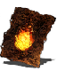

Descrição: Feitiço padrão para piromantes. Cria uma bola de fogo que é lançada nos inimigos.
Para usar piromancias, equipe uma chama piromântica e aprenda uma piromancia em uma fogueira.
O poder de um feitiço de piromancia é diretamente afetado pela qualidade do catalisador usado.
Localização:
Usos: 8
